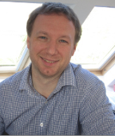
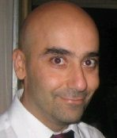

|
I am blessed to be supervised by kind and experienced mentors during my career life, who taught me not only
technically but also mentally. I will also teach my students like them. Below is a brief introduction of my mentors:
|

|
Prof. Timothy M. Jones
Prof. Timothy M. Jones is a Professor at the University of Cambridge Computer Laboratory, as well as
Fellow and 1956 College Lecturer at Gonville and Caius college where he is joint Director of Studies (DoS)
for Computer Science. Tim's research focuses on extracting the many different forms of parallelism from
applications (e.g. thread-level, data-level, memory-level) to increase performance and address
energy-efficiency and reliability challenges within compilers, binary translators and microarchitectures.
Tim has been my mentor (2021 - 2024) throughout my postdoctoral research in processor architecture and
security, offered valuable insights and guidance as I investigate fundamental concepts and stay abreast of
emerging trends in these areas.
|
|
|
Dr. Dayu Shi
Dr. Dayu Shi is a Principal Engineer at Arm Ltd. and has over 15 years of experience in electronic system
and IC design. During his tenure at Arm, he has held various leadership roles, including product lead,
technical lead, design lead, and security lead, for IC design projects spanning a wide range of
applications, from the IoT to mobile phones and servers. His expertise encompass electronic system and
computer architecture, IC front-end microarchitecture design, IC hardware security, and IC product
management.
Dayu has been my mentor (2020 - 2022) while I worked at ARM, provided valuable guidance in SoC
(micro-)architectures and design automation, helping me gain a deeper understanding of real-world industry
challenges and best practices.
|
|

|
Mr. Rabih ah
Mr. Rabih ah is a Senior Manager at the Renesas Electronics and owns more than 30 years of experience in
architecture, deisng, and verification. He has led the development of innovative automotive products now
widely used by industry leaders like Bosch and BMW. His deep expertise in IC architecture and verification
ensures these products meet stringent safety and performance standards.
Rabih has been my mentor (2018 - 2020) while I worked at Renesas, shared essential strategies to
anticipate and address potential safety challenges in hardware design, enhancing my ability to deliver
high-quality, safety-focused designs.
|
|
|
Prof. Neil Audsely
Prof. Neil Audsley is a Professor at the City, University of London, as well as the Deputy Dean of School
of Science and Technology and Director of STEM Digital Academy. Neil has a successful research career in
Real-Time Embedded Systems, he has developed many novel approaches and implementation techniques, including
predictable hardware, improved system software and system timing analysis. Specific areas of research
include high performance real-time systems and their acceleration on FPGAs; real-time memory architectures;
scheduling, timing analysis and worst-case execution time analysis.
Neil has been my mentor (2014 - 2018) throughout my doctoral research in real-time embedded systems, gave
me indispensable guidance that helped me develop my research vision, thinking, and methodologies, bringing
me into the world of academia.
|
|